PLANTAÇÕES E PLANTAS SILVESTRES Pular para a seção: Plantações de primavera, Plantações do verão, Plantações de outono, Estufa, Outras informações Há muitas plantações diferentes que você pode cultivar como também plantas silvestres que você pode colher em Harvest Moon: Back to Nature. As plantações e plantas silvestres são diferentes a cada estação e se você ainda tem plantações elas morrerão quando a estação mudar. O lucro por dia é o número que eu calculei para comparar plantações diferentes para ver qual planta é o melhor investimento desde de que todos elas crescem em diferentes ritmos, venda por quantidade diferentes e as sementes custam quantidades diferemtes também, Para calcular o lucro por dia eu fiz um quadrado 3x3 de terra neste videogame e calculei quanto de dinheiro você poderia ganhar plantando as sementes repetidamente se elas não crescerem de volta ou por repetidamente colhendo elas se elas não crescem de volta. eu tirei o total da receita no fim da estação menos a despesa de sementes e então dividi por 30 dias> Este número leva em consideração fatores tal como ter dias extras no fim da estação onde não há bastante tempo para a plantação crescer de volta e o fato de que você não pode alcançar a planta do meio das plantações que crescem de volta até você corta o resto no fim da estação neste videogame.> Este número assume que você tem um regador que pode regar quadrados 3x3 então asssim você pode regar a planta do meio. Todas as plantas selvagens podem ser achados na montanha, próximo a fonte termal(Hot springs) ou na área ao redor da casa de Gotz. PLANTAÇÕES DE PRIMAVERA 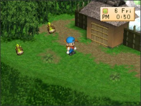 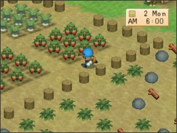 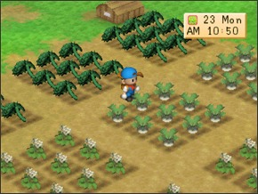 Preço da semente Preço de venda Dias para crescer Dias para recrescer Lucro por dia Onde comprar/achar Nabo(Turnip) 120G 60G 5 – 84g Supermercado(Supermarket) Batata(Potato) 150G 80G 8 – 57G Supermercado(Supermarket) Pepino(Cucumber) 200G 60G 10 5 75G Supermercado(Supermarket) Repolho(Cabbage) 500G 250G 15 – 117G Loja do Won(Won’s Shop)) Morango(Strawberry) 150G 30G 9 2 84g Supermercado(Supermarket)* Flor da brincadeira(Toy Flower) 300G – 12 – – Loja do Won(Won’s Shop)) Flores de amnedoeiras(Moondrop Flowers) 300G – 6 – – Loja do Won(Won’s Shop)^ Grama(Grass) 500G – 11 7 – Supermercado(Supermarket) Broto de bambu(Bamboo Shoot) – 50G – – 150g Cresce na mata(Grows in the wild)) Erva azul(Blue Grass) – 100G – – 200g Cresce na mata(Grows in the wild)) *A semente de morango fica disponível depois de você entregar 100 nabos(turnips), 100 batatas(potatoes), 100 pepinos(cucumber) e 100 repolhos(cabbages). Durante a primavera se você tem ao menos 15.000 de afeto com Karen ela virá e lhe dará alguns sacos de sementes de amnedoeiras. Depois delas florescerem Won começara a vender sementes de amnedoeiras. Em termos de lucro seu melhor investimento durante a primavera em Harvest Moon: Back to Nature é ir com sementes de repolho(cabbage). Enquanto que você só pode plantar duas deleas no mesmo espaço em uma estação, elas ultimamente trarão o maior lucro por dia. Se você está começando e não pode pagar por repolho(cabbage) então vá de nabos(turnips). Pepinos(cucumber) pode parecer um bom investimento neste videogame desde que eles recrescem mas quando você faz a matemática acaba ganhando menos no fim da estação com a mesma quantidade de espaço que nabos(turnips). Todo dia durante a primavera você pode achar 3 brotos de bambu(bamboo shoots) e 2 ervas azul na mata. No seu primeiro ano especialmente você deveria coletar eles todos os dias. PLANTAÇÕES DO VERÃO 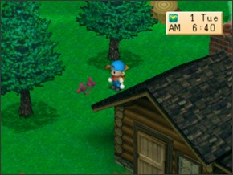 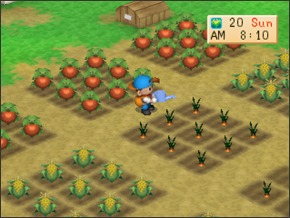 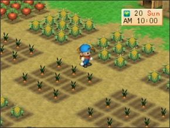 Preço da semente Preço de venda Dias para crescer Dias para recrescer Lucro por dia Onde comprar/achar Cebola(Onion) 150G 80G 8 – 57g Supermercado(Supermarket) Tomate(Tomato) 200G 60G 10 3 107G Supermercado(Supermarket) Milho(Corn) 300G 100G 15 3 153G Supermercado(Supermarket) Abacaxi(Pineapple) 1.000G 500G 21 5 250G Loja do Won(Won’s Shop) Abobora(Pumpkin) 500G 250G 15 - 117g Supermercado(Supermarket)* Flor do gato rosa(Pink cat Flower) 200G – 6 – – Loja do Won(Won’s Shop) Grama(Grass) 500G – 11 7 – Supermercado(Supermarket) Erva vermelha(Red Grass) - 100G - - 200G Na mata *A semente de abobora(Pumpkin Seeds) se torna disponível depois de você entregar 100 cebolas(onions), 100 tomates(tomatoes), 100 milhos(Corns) e 100 abacaxis(Pineapples). Em termos de produzir melhor lucro com seu espaço durante o verão em Harvest Moon: Back to Nature você deveria plantar abacaxis(Pineapple). Mesmo que eles levam quase toda a estação para crescer e você só pode ter duas colheitas delas o alto preço já é o bastante para fazer deles o melhor investimento neste videogame. Se você não pode pagar abacaxis(Pineapples) então sua próxima aposta é ir de milho. Todo dia durante o verão você pode encontrar 2 ervas vermelhas(Red grass) que crescem na mata. PLANTAÇÕES DE OUTONO 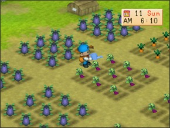 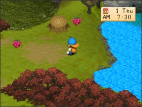 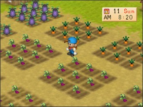 Preço da semente Preço de venda Dias para crescer Dias para recrescer Lucro por dia Onde comprar/achar Cenoura(Carrot) 300G 120G 8 – 78G Supermercado(Supermarket) Breinjela(Eggplant) 120G 80G 10 3 148G Supermercado(Supermarket) Batata doce(Sweet Potato) 300G 120G 6 3 282G Supermercado(Supermarket) Pimenta verde(Green Pepper) 150G 40G 8 2 252G Loja do Won(Won’s Shop) Espinafre(Spinach) 200G 80G 6 – 87G Supermercado(Supermarket)* Flor vermelha da magia(Magic Red Flower) 600G – 10 – – Loja do Won(Won’s Shop) Grass 500G – 11 7 – Supermercado(Supermarket) Maçã(Apples) – 50G – – 150G Na árvore da sua fazenda, próximo a sua casa(The tree on your farm) Erva verde(Green Grass) – 100G – – 200G Cresce na mata(Grows in the wild) Uvas silvestres(Wild Grapes) – 50G – – 100G Cresce na mata(Grows in the wild) Cogumelo(Mushroom) – 70G – – 280G Cresce na mata(Grows in the wild) Cogumelo venenoso(Poisonous Mushroom) – 100G – – 100G Cresce na mata(Grows in the wild) Trufa(Truffle) – 500G – – 500G Cresce na mata(Grows in the wild) *As sementes de espinafres(Spinach Seeds) se tornam disponíveis depois de você entrgar 100 cenouras(Carrots), 100 breinjela(Eggplant), 100 batatas doce(Sweet potatoes) e 100 pimenta verde(Gree pepper). Em raras ocasiões um vermelho colorido de uma flor da magia vermelha(Red magic flower)(Elas são frequentementes azuis por isso a confusão) eles crescerão e elas podem ser vendidas por 200G. De longe o melhor investimento no outono de Harvest Moon: Back to Nature é plantar batata doces(Sweet potatoes). Elas não são muito caras então você deveria facilmente capaz de plantar muitas Todo dia durante o outono neste videogame você pode achar 3 maçãs(apples) na árvore da sua fazneda, e na mata você pode achar 2 ervas verdes(green grass), 4 cogumelos(mushroom), 1 cogumelo venenoso(poisonous mushroom), 2 uvas silvestres(Wild grapes) e 1 trufa(Truffle) Cerifique-se de apanhar a trufa(truffle) todo dia e você ganhará 15.000 no fim da estação. SOMENTE NA ESTUFA 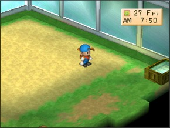 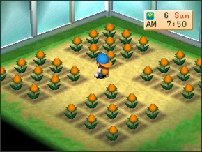 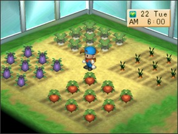 Preço da semente Preço de venda Dias para crescer Dias para recrescer Lucro por dia Onde comprar Fruta da taça de laranja 1.000G 60G 8 -46 Loja do Won(Won's shop) Fruta da taça de laranja não parece um bom modo de ganhar dinheiro em Harvest Moon: Back to Nature. Você provavelmente só quer plantar elas para dar como presentes. OUTRAS INFORMAÇÕES Se você plantar ao menos um quadrado 3x3 de qualquer flor abelhas aparecerão na sua fazenda e farão uma colmeia em sua macieira. dai então você será capaz de coletar um pote de mel da colmeia todo dia no qual vende por 50G. Dê o pote de mel para Louis e ele dira que suas abelhas são de uma especie rara e o mel que você coleta vendera agora por 60G. Se você plantar mais de +90 de qualquer flor Anna virá para sua fazenda e pedirá sua permissão para apanha-las. Ela levará todas as flores mas você recebe uma Power Berry. Olá! Bem-Vindo!